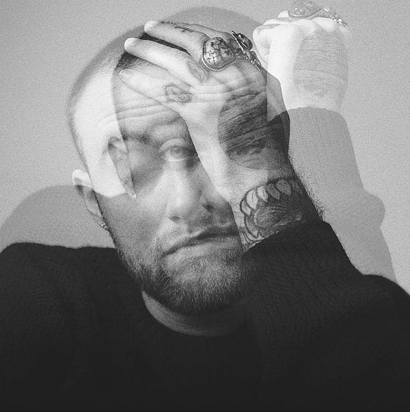

Malcolm James McCormick (January 19, 1992 – September 7, 2018), known professionally as Mac Miller, was an American rapper and record producer from Pittsburgh, Pennsylvania. Miller struggled with substance abuse, which was often referenced in his lyrics. On September 7, 2018, Miller died from an accidental drug overdose of cocaine, fentanyl, and alcohol at his home, aged 26.
Circles is the sixth and final studio album by American rapper and singer Mac Miller. It was released posthumously on January 17, 2020, by REMember Music and Warner Records, and was being worked on by Miller before his death in September 2018.
